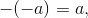
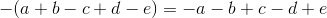
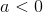
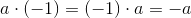
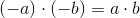

Operații cu numere întregi
Adunarea numerelor întregi
Definiția NÎ07: Suma a două numere întregi
Se numeşte suma a două numere întregi diferite de zero un număr întreg care este:
- suma modulelor celor două numere precedată de semnul "
 ", dacă cele două numere întregi sunt pozitive;
", dacă cele două numere întregi sunt pozitive;
suma modulelor celor două numere precedată de semnul "", dacă cele două numere întregi sunt negative;
diferenţa modulelor celor două numere precedată de semnul numărului cu modulul mai mare, dacă cele două numere întregi au semne diferite şi module diferite;
numărul întreg  , dacă cele două numere întregi au semne diferite şi module egale.
, dacă cele două numere întregi au semne diferite şi module egale.
Definiția NÎ08: Adunarea numerelor întregi
Operaţia prin care se obţine suma a două numere întregi se numeşte adunarea numerelor întregi.
Propoziția NÎ09: Proprietăți ale adunării numerelor întregi
- Comutativiatea adunării numerelor întregi
, pentru orice .
- Asociativiatatea adunării numerelor întregi
, pentru orice  .
.
- este elementul neutru al adunării numerelor întregi
, pentru orice  .
.
- Orice număr întreg are un opus
Orice număr întreg adunat cu opusul lui este numărul întreg :
, pentru orice .
Pentru a înțelege mai bine cum se adună numerele întregi, urmărește cu atenție exemplele de mai jos.
Exemple:
Ne vom folosi de noțiunile teoretice prezentate în primul capitol, „Definirea numerelor întregi”, în special de reprezentarea pe axă a numerelor întregi.
Trasăm axa numerelor, fixăm originea, unitatea de măsură și un sens de parcurgere (spre dreapta).
Punem pe axă numărul , apoi numărăm  unități de măsură spre dreapta, deoarece la numărul trebuie să adunăm numărul .
unități de măsură spre dreapta, deoarece la numărul trebuie să adunăm numărul .
Numărăm de la origine până la unitatea și aflăm rezultatul.

Am obținut că  .
.
Observăm că ne folosim de proprietatea de comutativitate a adunării pentru a obține:
.
Acum, analog exemplului anterior avem:
.png)
Așadar, rezultatul căutat este:
Analog primulul exemplu, obținem:

Scăderea numerelor întregi
Definiția NÎ10: Scăderea a două numere întregi
Pentru a efectua scăderea a două numere întregi care au acelaşi semn adunăm la descăzut opusul scăzătorului.
Definiția NÎ11: Diferența a două numere întregi
Diferenţa dintre două numere întregi  şi
şi  este suma lui cu opusul lui .
este suma lui cu opusul lui .
Matematic se notează astfel:
Exemple:
Trasăm axa numerelor, fixăm originea, unitatea de măsură și un sens de parcurgere (spre dreapta).
Punem pe axă numărul  , apoi numărăm unități de măsură spre stânga, deoarece din numărul trebuie să scădem numărul .
, apoi numărăm unități de măsură spre stânga, deoarece din numărul trebuie să scădem numărul .
Numărăm de la origine până la unitatea și aflăm rezultatul.

.
Analog exemplului anterior, avem:

Avem:

Observație:
Semnul minus din fața parantezei schimbă toate semenele numerelor din paranteză. Semnul plus din fața parantezei lasă neschimbate semnele numerelor din paranteză.
Exemple:
-  oricare ar fi .
- oricare ar fi
 .
. - .
- .
Înmulțirea numerelor întregi
Definiția NÎ12: Produsul a două numere întregi
Produsul a două numere întregi şi este un număr întreg notat cu sau care se obţine astfel:
- dacă sau , atunci ;
- dacă 0"> şi 0"> sau  şi , atunci ;
- dacă 0"> şi sau şi 0">, atunci .
Exemple:
- Avem:
- Avem:
- Avem:
- Avem:
Definiția NÎ13: Înmulțirea numerelor întregi
Operaţia prin care se obţine produsul a două numere întregi se numeşte înmulţire.
Propoziția NÎ14: Proprietăți ale înmulțirii numerelor întregi
- Comutativitatea înmulțirii numerelor întregi
Pentru orice numere întregi  , avem că .
, avem că .
- Asociativitatea înmulțirii numerelor întregi
Pentru orice numere întregi , avem că  .
.
- Numărul este elementul neutru al înmulțirii numerelor întregi
Pentru orice număr întreg  , avem că .
, avem că .
- Distributibutivitatea față de adunare și scădere a înmulțirii numerelor întregi
Pentru orice numere întregi , avem că:
,
respectiv
.
Observații:
- Pentru orice număr întreg
 , avem:
, avem:  .
. - Pentru orice număr întreg , avem: .
- Regula semnelor: pentru orice numere întregi şi
 , avem:
, avem:- ;
- .
Exemple:
- , .
- .
- .
- .
Împărțirea numerelor întregi
Definiția NÎ15: Impărțirea numerelor întregi
Dacă şi sunt două numere întregi şi  , câtul dintre şi , notat sau
, câtul dintre şi , notat sau  , este un număr întreg , dacă există, pentru care .
, este un număr întreg , dacă există, pentru care .
Numărul se numeşte deîmpărţit, iar numărul , împărţitor.
Operaţia prin care se obţine câtul a două numere întregi se numeşte împărţirea numerelor întregi.
Exemple:
- .
- .
- .
 .
.- .
- .
- .
Observații:
- .
- Pentru orice număr întreg , avem că ; ; .
- Pentru orice număr întreg nenul , avem că .
- Pentru orice numere întregi
 , cu
, cu  şi există câtul între şi , respectiv şi , atunci .
şi există câtul între şi , respectiv şi , atunci . - Pentru orice număr întreg , operaţia nu are sens.
- Dacă într-un exerciţiu apar înmulţiri şi împărţiri, ele se efectuează în ordinea dată.
- Regula semnelor stabilită la înmulţirea numerelor întregi se păstrează şi la împărţirea numerelor întregi:
- Dacă numerele și sunt amândouă naturale sau amândouă întregi negative, câtul împărțirii lui la este un număr natural.
- Dacă unul dintre numerele sau este natural și celălalt întreg negativ, câtul împărțirii lui la este un număr negativ.
- Dacă numerele
Puterea unui număr întreg cu exponent număr natural
Definiția NÎ16: Puterea n a unui număr întreg
Dacă este un număr întreg şi  este un număr natural, , atunci puterea a lui este:
este un număr natural, , atunci puterea a lui este:
.
se numeşte bază, iar se numeşte exponent.
Observații:
- Prin definiţie , iar dacă este diferit de zero, atunci .
- Nu se defineşte
 ; se mai spune că nu are sens.
; se mai spune că nu are sens.
Propoziția NÎ17: Proprietăți ale puterii unui număr întreg cu exponent număr natural
- Dacă baza este un număr pozitiv, puterea este un număr pozitiv oricare ar fi exponentul.
- Dacă baza este un număr negativ şi exponentul un număr par, atunci puterea este un număr pozitiv.
- Dacă baza este un număr negativ şi exponentul este un număr impar, atunci puterea este un număr negativ.
Exemple:
- este egal cu:
.
- este egal cu:
.
- este egal cu:
 .
.
- .
Reguli de calcul cu puteri
Dacă şi sunt două numere întregi,  şi sunt două numere naturale, iar operaţiile care trebuie efectuate sunt definite, atunci:
şi sunt două numere naturale, iar operaţiile care trebuie efectuate sunt definite, atunci:
- ;
- ;
- ;
- ;
- .
Exemple:
- .
- .
- .
- .
- .
- .
- .
Observație:
Atunci când întâlnim bază negativă, , vom proceda astfel:
- dacă exponentul puterii este număr par, atunci ;
- dacă exponentul puterii este număr impar, atunci .
Ordinea efectuării operațiilor și folosirea parantezelor
Într-un şir de operaţii cu numere întregi se efectuează mai întâi ridicările la putere, apoi înmulţirile şi împărţirile, în ordinea în care apar, şi după aceea adunările şi scăderile în ordinea în care apar.
În exerciţiile de calcul cu paranteze se efectuează mai întâi calculele dintre parantezele mici (rotunde „ ”), apoi calculele dintre cele mari (drepte „ ”) şi după aceea cele dintre acolade („ ”). Eliminând parantezele rotunde, cele drepte se transformă în cele rotunde, iar acoladele se transformă în cele drepte. Se efectuează calculele până când se elimină toate parantele.
Accesează următoarea pagină pentru a vedea cum se aplică toate noțiunile teoretice prezentate în cadrul acestui capitol în exercițiile și problemele rezolvate complet de către profesorii noștri de matematică.